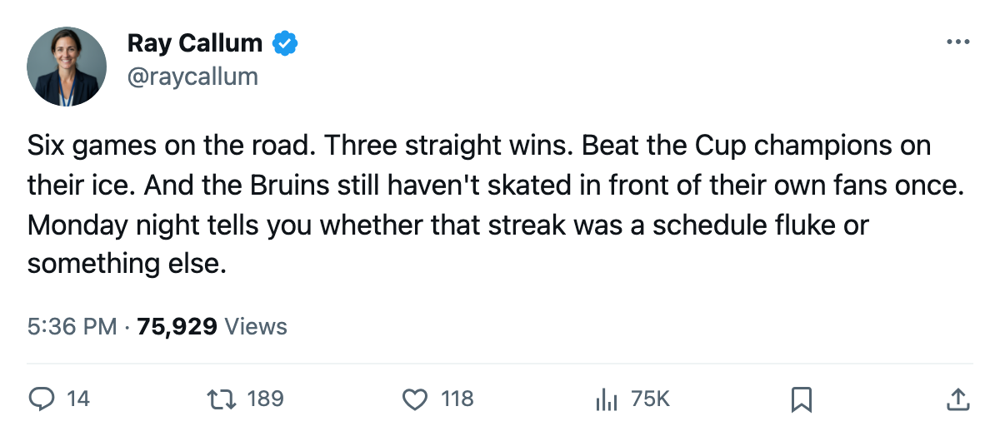
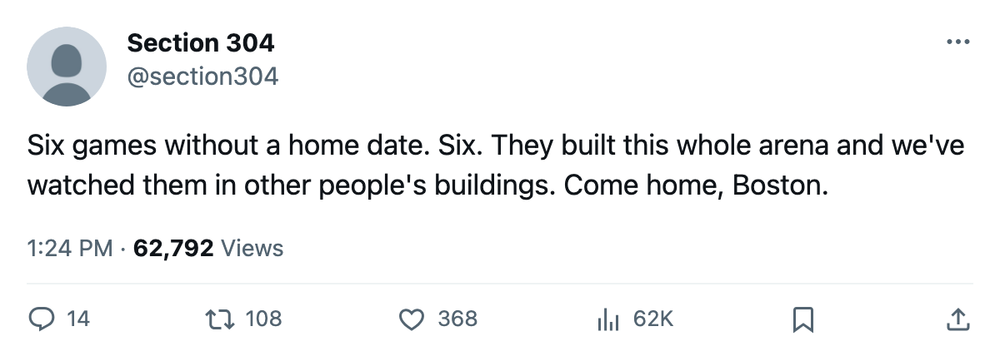

Numbers Game: Boston Has Played 6 Games and Not Once at Home
4-1-1 on the road, 0-0 at home, and the first home date is Monday against Ottawa
 Ray CallumSenior correspondent · Home Ice Network
Ray CallumSenior correspondent · Home Ice NetworkThe piece
The  Boston Bruins Bruins have played 6 games this season and have not played one at home. Their first home date is Monday, October 24, when the
Boston Bruins Bruins have played 6 games this season and have not played one at home. Their first home date is Monday, October 24, when the  Ottawa Senators Senators visit. It opens a 2-game homestand that closes Thursday against
Ottawa Senators Senators visit. It opens a 2-game homestand that closes Thursday against  Atlanta Thrashers.
Atlanta Thrashers.
The standings carry Boston at 4-1-1 with 9 points, 2nd in the Eastern Conference. The home/away split reads 0-0 at home and 4-2 on the road.
The most recent win came October 21: a 3-2 road victory at  Toronto Maple Leafs, the defending Stanley Cup champions. The Bruins outshot Toronto 30 to 23. That result pushed Boston past both
Toronto Maple Leafs, the defending Stanley Cup champions. The Bruins outshot Toronto 30 to 23. That result pushed Boston past both  New York Rangers and
New York Rangers and  Pittsburgh Penguins, who sit at 8 points each.
Pittsburgh Penguins, who sit at 8 points each.
The goaltending shifted before the weekend.  Steve Shields77 moved from the backup slot to the starter's role.
Steve Shields77 moved from the backup slot to the starter's role.  Andrew Raycroft78, who had started 5 of the first 6 games, was dropped from the dressed list. Chris Mason66 was elevated to the backup position.
Andrew Raycroft78, who had started 5 of the first 6 games, was dropped from the dressed list. Chris Mason66 was elevated to the backup position.
 Sergei Samsonov82 carries a neck injury with a November 9 return date. He is the only Boston player on the active injured list. The Bruins scored 20 and allowed 15 across those 6 road games.
Sergei Samsonov82 carries a neck injury with a November 9 return date. He is the only Boston player on the active injured list. The Bruins scored 20 and allowed 15 across those 6 road games.
Ottawa visits at 1-2-0, 2 points, riding a 1-game win streak after beating  New Jersey Devils 3-1. It is the first meeting between these clubs this season.
New Jersey Devils 3-1. It is the first meeting between these clubs this season.

